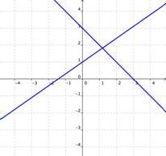
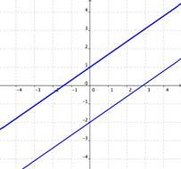
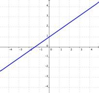

UNIDAD III. ECUACIONES E INECUACIONES
Tema I Ecuaciones de Primer Grado
Concepto y el proceso de resolución de las ecuaciones lineales
Se llaman ecuaciones enteras a aquellas en la que en su denominador no contienen ninguna incógnita, de lo contrario se llaman fraccionarias. Si las incógnitas se presentan dentro de una raíz, se llaman ecuaciones irracionales; siendo racionales las ecuaciones que no tienen incógnitas en su raíz.
2x -1 = 5x + 8
Escribimos los monomios con incógnita en la izquierda y los que no tienen incógnita en la derecha.
Como 5x5x está sumando en la derecha, pasa restando a la izquierda. El número 1 de la izquierda está restando, así que pasa sumando al otro lado:
2x – 5 x = 8 + 1
Sumamos los monomios en cada lado:
Es decir,
-3x = 9
-3 · x = 9
Para despejar la incógnita, debemos pasar el coeficiente de la incógnita a la derecha. Como está multiplicando, pasa dividiendo (con el signo negativo incluido):
x = 9/(-3)= - 9/3
Finalmente, simplificamos la fracción:
x = -3
Por tanto, la solución es x=−3x=−3.
Comprobamos la solución sustituyendo en la ecuación:
2x – 1 – 5x + 8
2 · (-3) – 1 = 5 · (-3) + 8
-6 -1 = -15 + 8
-7 = 7
Ecuación Fraccionaria. Ecuación que contiene fracciones algebraicas, es decir, donde la variable aparece en los denominadores de las fracciones ( al menos en uno de ellos).
Para resolver una ecuación fraccionaria de primer grado:
Si en los numeradores hay binomios o polinomios, debemos encerrarlos en paréntesis para evitar errores con los signos negativos. El signo menos que aparece antes de una fracción afecta a todo el numerador.
Buscamos el mínimo común múltiplo de los denominadores.
Multiplicamos cada término de la ecuación por el m.c.m. encontrado.
Simplificamos los denominadores de los términos fraccionarios con el m.c.m.
Resolvemos los paréntesis efectuando las operaciones indicadas.
Continuamos resolviendo la ecuación con los números enteros que obtuvimos.
En general, las ecuaciones fraccionarias se resuelven transformándolas en ecuaciones enteras, para lo cual es necesario eliminar los denominadores. Para eliminar los denominadores en una ecuación fraccionaria se procede de la siguiente manera:
Se halla el mcm de los denominadores.
Se multiplican ambos miembros de la ecuación por el m.c.m de los denominadores.
Ejemplo 1
2/(x + 1) = 3/(x - 1) el mcm de los denominadores es: (x + 1) (x - 1)
Es importante tener presente que cuando ambos miembros de una ecuación fraccionaria se multiplican por el mcm de los denominadores, entonces se obtiene una ecuación equivalente a la dada, siempre que la solución obtenida no anule algún denominador.
Los signos de agrupación definen el orden en el que se realizará la operación un ejemplo es, las operaciones que están entre paréntesis son las que se realizaran primero, posteriormente las que se encuentran entre corchetes y por ultimo las que se encuentran entre llaves.
Ejemplo:
{2*2[2+2(4+2)]} Primeramente realizaremos la operación entre paréntesis, en este caso sería 4+2=6 {2*2[2+2(6)]} posteriormente la que se encuentra entre los corchetes en este caso es una suma con multiplicación 2+2=4*6 {2*2[24]} como ves el paréntesis ha desaparecido ahora vamos con la que se encuentra entre llaves2*2=4*24 {96} han desaparecido los corchetes por tanto el resultado es 96.
Así de sencillo solo hay que seguir la jerarquía de los signos.
Estos signos se emplean para indicar que cantidades contenidas en ellas se consideran como una sola cantidad. También indican que las operaciones que están dentro de ellas deben efectuarse primero.
Jerarquía de las operaciones
Las operaciones se tienen que resolver en el siguiente orden. Operaciones dentro de signos de agrupación en el siguiente orden: paréntesis (), corchetes [] y llaves {}.
Primero resuelve las multiplicaciones y divisiones de izquierda a derecha, y después resuelve las suma y las restas de izquierda a derecha
Nota: Recuerda siempre tomar en cuenta la Ley de los signos
Ejemplo
3x- (5y+ [-2x+ (y- 6+x) - (-x+y)])=
3x- (5y+ [-2x+ y -6 +x - (-x+y)]) Quitando el primer paréntesis () que están dentro del [ ]
3x- (5y+ [-2x+ y - 6 + x + x - y]) Quitando el segundo paréntesis () que están dentro del [ ]
3x- (5y -2x+ y - 6 + x + x - y) quitando el [ ]
3x - 5y + 2x -y +6 - x - x + y quitando el ()
Ahora una reducción de términos semejantes
3x - 5y + 6 Y nos quedó como resultado
Una ecuación lineal (o de primer grado) es una igualdad que tiene una solución para la incógnita.
Ejemplos de ecuaciones lineales son:
1) 2x − 0,5x − 1 = 3
2) x + 3(x + 1) = −4
Una ecuación literal es aquella que contiene expresiones literales además de la incógnita. Por convención, se identifica como incógnitas a las últimas letras del alfabeto y como literales a las primeras letras del alfabeto (estos literales se suponen valores constantes). Para resolver ecuaciones literales se efectúa el mismo procedimiento aplicado en la ecuación del ejemplo anterior. La variante es que cuando tengamos todas las incógnitas a un lado de la ecuación, factorizaremos por ella para poder despegarla.
ejemplo:
ax–b (x -1) = 3(x + a)
Tal como en el caso anterior, efectuamos las operaciones, reducimos términos semejantes y trasponemos términos:
Resolvemos las operaciones
ax - bx + b = 3x + 3a
Reducimos términos semejantes y trasponemos términos:
ax–bx–3x = 3ª – b
Factorizamos al lado izquierdo por la incógnita:
x(a–b–3) = 3a–b
d) Para despejar x y calcular su valor, debemos dividir por
(a–b–3)
Se divide, porque el factor de la incógnita es diferente de 1
Por lo tanto:
x = (3a-b)/(a-b-3)
Desigualdades lineales
Desigualdad lineal e intervalo
INTERVALOS: Son regiones comprendidas entre dos números reales. En general, si los extremos pertenecen al intervalo, se dice que cerrado, si por el contrario no pertenecen al intervalo, se dice que es abierto. Si uno de extremos pertenece al conjunto y el otro no, se dice que semiabierto o semicerrado.
DESIGUALDAD: Son enunciados que indican que dos cantidades no son iguales, y las podemos identificar por el uso de uno o más de los siguientes símbolos de desigualdad.
a < b quiere decir “a es menor que b”
a > b quiere decir “a es mayor que b”
a ≤ b quiere decir “a es menor o igual que b”
a ≥ b quiere decir “a es mayor o igual que b”
Propiedades de las desigualdades
Cuando se utilizan desigualdades o inecuaciones, deben tenerse en cuenta fundamentalmente las siguientes reglas (aunque las enunciamos sólo con el símbolo ≤, y ≥):
Si a los dos miembros de una desigualdad se les suma o resta un mismo número se obtiene otra desigualdad del mismo sentido.
a < b ⇒ a + b < + c ∀ c ∈ R
Debido a esta propiedad, se pueden transponer términos como en las ecuaciones, o sea, los elementos que están en un miembro sumando pasan al otro restando.
Ejemplo Si se cumple que – 3 < 5 entonces – 3 + 4 < 5 + 4 o 1 < 9
Si los dos miembros de una desigualdad se multiplican o dividen por un número positivo se obtiene otra desigualdad equivalente a la primera
a < b y c > 0 ⇒ ac < bc y a/c < b/c
Ejemplo:
Si – 10 < 1 ⇒ – 2 · 3 < 8 · 3 ⇒ – 6 < 24
Si los dos miembros de una desigualdad se multiplican o dividen por un número negativo la desigualdad cambia de sentido.
a < b y c > 0 ⇒ ac > bc y a/c > b/c
Ejemplo
Si – 10 < 1 ⇒ – 10 (–2) > 1 (–2) ⇒ 20 > – 2
El sentido de una desigualdad se conserva al multiplicar (o dividir) sus dos miembros por un mismo número positivo, y se invierte si dicho número es negativo.
Aplicando las propiedades anteriores a las inecuaciones tenemos los siguientes ejemplos:
Ejemplo: La desigualdad 2x < x + 5 equivale a 2x − x < 5, pues basta sumar –x a los dos miembros de la primera
2x < x + 5 ⇒ 2x + (-x) < x + 5 + (-x) ⇒ 2x – x < 5 ⇒ x < 5
Ejemplo: De la expresión 3x < 5 podemos deducir x< −5/3, porque para despejar x hemos de dividir por 3 (positivo) los dos miembros de la primera desigualdad.
Ejemplo De la expresión −3x < 5 podemos deducir x > −5/3 , porque para despejar x hemos de dividir por −3 (negativo) los dos miembros de la primera desigualdad.
Desigualdad lineal por, Intervalo y Gráfico
Un intervalo es un conjunto de números reales que satisfacen una cierta desigualdad. Para representarlos, de manera abreviada, vamos a introducir la siguiente notación:
Denotamos con (a, b) a los números que se encuentran entre a y b; es decir:
(a, b) = {x | a < x < b}
El conjunto (a, b) se llama intervalo abierto y se utilizan los paréntesis para indicar que los puntos extremos, a y b no están incluidos.

Denotamos por [a, b] a los números que se encuentran entre a y b incluyendo a, a y b; es decir:
[a, b] = {x | a ≤ x ≤ b}
El conjunto [a, b] se llama intervalo cerrado y se utilizan los corchetes para indicar que los extremos están incluidos.

También están los intervalos semiabierto o semicerrado denotados por [a,b) y (a,b] que se definen como:
[a, b) = {x | a ≤ x < b}

(a, b] = { x | a < x ≤ b}

Los intervalos correspondientes a este tipo de desigualdades se denominan intervalos infinitos y se definen de la siguiente manera:
(a, ∞) = {x | x > a}

[a, ∞) = {x | x ≥ a}

(– ∞,b) = {x | x < b}

(–∞, b] = { x | x ≤ b}

(–∞,∞) = R

Para encontrar la solución de una desigualdad lineal, es necesario conocer cómo obtener la solución de ecuaciones lineales, así como resolver sistemas de ecuaciones lineales, en esta sección se presenta el método gráfico para la resolución de desigualdades lineales.
El método gráfico permite simplificar un poco la complejidad de los cálculos para obtener la solución de una desigualdad lineal, debido a que la interpretación geométrica suele ser más simple: basta con comparar el valor de las ordenadas de las rectas y sus pendientes para decidir cuál es el conjunto solución.
Encontrar el conjunto solución con el método gráfico, consiste en gráficar las rectas que definen las expresiones lineales de la desigualdad, encontrar la intersección entre ellas (si es que existe) y decidir, por medio del análisis de los valores de las abscisas, cuál es el conjunto solución de la desigualdad.
Para lograr esto, es necesario saber cómo encontrar el punto de intersección entre dos rectas, lo cual se realiza resolviendo el sistema de ecuaciones lineales generado por la desigualdad.
Ejemplo Encontrar solución para la desigualdad -2x -11 > 4x + 1
y1 = -2x -11
y2 = 4x + 1
La desigualdad dice que la gráfica y1 debe tomar calores menores que y2, es decir y1 < y2
El punto de intersección es ( -2, -7)
Por lo que el conjunto solución es: {x | x < -2}

Sistemas de ecuaciones lineales con dos incógnitas.
sistemas de ecuaciones lineales con dos incógnitas
Una ecuación lineal con dos incógnitas es una expresión de la forma ax+by=c donde a, b y c son los coeficientes (números) y “x” e “y” son las incógnitas. Gráficamente una ecuación lineal representa una recta en el plano. Un sistema de dos ecuaciones lineales con dos incógnitas será de la forma:
ax+by=c
a’x+b’y=c
Resolver un sistema de dos ecuaciones lineales con dos incógnitas es encontrar los valores de las incógnitas “x” e “y” que verifican las dos ecuaciones a la vez. Puede suceder que haya una única solución (las rectas se cortan en un punto), que haya infinitas soluciones (las rectas coinciden) o que no haya solución (las rectas son paralelas).
La solución de un sistema de ecuaciones es el valor o valores que hacen válidas a todas las ecuaciones en el sistema. Las gráficas de las ecuaciones del sistema te dicen cuántas soluciones existen para ese sistema.
| Una Solución | No hay Soluciones | Soluciones Infinitas |
|---|---|---|
|  |  |  |
| Si las gráficas de las ecuaciones se intersectan, entonces existe una solución que es válida para ambas ecuaciones. | Si las gráficas de las ecuaciones no se intersectan (por ejemplo, si son paralelas), entonces no existen soluciones que sean válidas para ambas ecuaciones. | Si las gráficas de las ecuaciones son la misma, entonces existe un número infinito de soluciones que son válidas para ambas ecuaciones. |
solución de los sistemas de ecuaciones lineales con dos incógnitas
1. Método de sustitución
Este método consiste en aislar una incógnita en una de las ecuaciones para sustituirla en la otra ecuación. De este modo, se obtiene una ecuación con una sola incógnita. Una vez resuelta esta ecuación, se sustituye en alguna de las ecuaciones para hallar la otra incógnita.
Ejemplo:

Despejamos la xx en la primera ecuación:

Ahora, sustituimos la expresión algebraica en la segunda, es decir, escribimos 7−y7−y donde aparece xx:

Resolvemos la ecuación:

Como ya conocemos y, podemos calcular xx a partir de la ecuación que obtuvimos al despejar x:

Por tanto, la solución del sistema es x=5x=5 e y=2y=2:

2. Método de igualación
Este método consiste en despejar la misma incógnita en las dos ecuaciones para igualar las expresiones algebraicas obtenidas. Se obtiene, así, una ecuación con una incógnita.
Ejemplo:

Despejamos la xx en la primera ecuación:

Despejamos la xx en la segunda ecuación:

Igualamos las dos expresiones:

Resolvemos la ecuación obtenida:

Como conocemos y, podemos calcular x (sustituyendo):

Por tanto, la solución del sistema es

3. Método de reducción
Este método consiste en sumar (o restar) las ecuaciones entre sí para eliminar una de las incógnitas. A veces, es necesario multiplicar por algún número las ecuaciones para que, al sumarlas, desaparezca una de las incógnitas.
Ejemplo:

Como las dos ecuaciones tienen el monomio 2y2y, si las restamos, éste desaparece:

Nota: si hubiésemos querido eliminar la incógnita x, tendríamos que haber multiplicado la segunda ecuación por 5 antes de restar las ecuaciones.
Resolvemos la ecuación:

Calculamos la otra incógnita sustituyendo en alguna de las ecuaciones (la segunda, por ejemplo):

Por tanto, la solución del sistema es

Ecuaciones de segundo grado
Tipo de ecuaciones cuadráticas
Las ecuaciones cuadráticas tienen como característica más relevante es que tienen un exponente más grande (en otras palabras, 𝑥 2). Esto es una ecuación cuadrática: 𝑎𝑥 2 + 𝑏𝑥 + 𝑐 = 0 La letra «x» es la variable o incógnita y las letras «a, b y c» son los coeficientes. La letra A es el coeficiente cuadrático de segundo grado y siempre es distinto de 0. La letra B es el coeficiente lineal o de primer grado. Y la letra C es el término independiente.
Las ecuaciones cuadráticas mixtas se resuelven por factorización simple. Una de sus raíces es igual a cero y la otra tendrá un valor real. ax2 + bx = 0
Para resolver una ecuación cuadrática pura, basta con despejar la variable y sus raíces serán iguales y de signo contrario. ax2 + c = 0
Dos soluciones
La gráfica de una ecuación cuadrática es muy útil para identificar cuántas soluciones y qué tipos de soluciones tiene una función. Hay tres situaciones diferentes que ocurren cuando se grafica una función cuadrática.
Ejemplo 1: La parábola intercepta el eje de las x− en dos puntos.
Un ejemplo de este caso es y=x2+x−6.
Podemos encontrar las soluciones a la ecuación x2+x−6=0 haciendo y=0. Resolvemos la ecuación factorando:(x+3) (x−2) =0, así x=−3 o x=2.
Otra forma de encontrar las soluciones es graficar la función y obtener la intersección en x−a partir de la misma. Vemos que la parábola intercepta el eje de las x− en x=−3\ y x=2.
Cuando la gráfica de una función cuadrática intercepta el eje x en dos puntos, obtenemos dos soluciones distintas para la ecuación cuadrática.
Un punto.
Ejemplo 2: La parábola toca el eje x− en un punto.
Un ejemplo de este caso es y=x2−2x+1.
Podemos resolver esta ecuación factorando. Si hacemos y=0 y factoramos, obtenemos:(x−1)2, así que x=1.
Ya que la función cuadrática es un cuadrado perfecto, obtuvimos una única solución para la ecuación.
Aquí podemos observar cómo luce la gráfica de esta función. Vemos que la gráfica toca el eje x− en el punto x=1.
Cuando la gráfica de una función cuadrática toca el eje x−en un punto, la ecuación cuadrática tiene una solución y es llamada una doble raíz.
Ejemplo 3: La parábola no intersecta o no toca el eje x−.
Un ejemplo de este caso es y=x2+4. Si hacemos y=0, obtenemos x2+4=0. Este polinomio cuadrático no se puede factorar y la ecuaciónx2=−4no tiene soluciones reales. Cuando observamos la gráfica de esta función, vemos que la parábola no intercepta o no toca el eje x−.
Cuando la gráfica de una función cuadrática no intercepta o no toca el eje axis, la ecuación cuadrática no tiene soluciones reales x−
Para resolver ecuaciones cuadráticas (de cualquier caso), es utilizada la llamada “fórmula general”, para encontrar las soluciones o raíces de una ecuación.
Se parte de la ecuación cuadrática:
ax2 + bx + c = 0
Se dividen ambos lados de la igualdad entre a:
(〖ax〗^2+bx+c )/a= 0/a
Se distribuye y se simplifica:
x2 + b/a x+ c/a = 0
Se resta c/a en ambos lados de la igualdad:
x2 + b/a x = - c/a
Se suma(b/2a)2, para completar el trinomio cuadrado perfecto:
x2 + b/ax + (b/2a)2 = (b/2a)2 - c/a
Se resuelve el cuadrado en el lado derecho de la igualdad:
x2 + b/ax + (b/2a)2 =b^2/〖4a〗^2 - c/a
Se factoriza el trinomio cuadrado perfecto
y se realiza la diferencia en el lado derecho de la igualdad :
(x+b/2a)2 = (b^2-4ac)/〖4a〗^2
Se saca la raíz cuadrada en ambos lados de la igualdad:
(x+b/2a)2 = √((b^2-4ac)/〖4a〗^2 )
Se despeja la variable x:
x+b/2a = ±√(b^2-4ac)/2a
Se reduce a común denominador obteniéndose:
x= (-b±√(b^2-4ac))/2a
Factorización
Supón que se nos pide resolver la ecuación cuadrática (x - 1) (x + 3) = 0
Este es un producto de dos expresiones, y es igual a cero, cualquier valor de x que haga que (x - 1) o (x+3) hará que el producto sea cero.
(x - 1) (x + 3) = 0
X – 1 = 0 x + 3 = 0
x = 1 x = -3
El sustituir x=1, o bien x=-3, en la ecuación tiene por resultado la ecuación verdadera 0 = 0así que ambos valores son soluciones de la ecuación.
Despeje directo
Cuando tenemos una ecuación cuadrática incompleta es muy buena idea hacer un despeje para resolverla. Este método es el más sencillo para este tipo de ecuaciones
Ejemplo1:
Resuelve la siguiente ecuación cuadrática
x2 + 1 = 50
Ahora tenemos una ecuación equivalente a la inicial. Esta ecuación en palabras nos está diciendo: Pensé un número, lo multipliqué por sí mismo y obtuve 49.
Pudo haber pensado el número 7. Pero también es posible que haya pensado el número -7, porque: (-7)2 = 49 Entonces, las soluciones de la ecuación son: x = 7, y = = -7
Verificación
Ejemplo 2:
Resuelve la siguiente ecuación
4x2 = 100
En este caso, de nuevo no aparece el termino lineal. Para simplificar la ecuación dividimos ambos lados de la igualdad entre 4, y obtenemos
x2 = 25
Ahora traducimos la ecuación: Pensé un número, lo multipliqué por sí mismo y obtuve 25, bien se pudo pensar en el número 5, así como pudo pensar en el número -5, dos casos uno positivo y otro negativo, vamos a despejar

Entendemos por el símbolo ± que hay dos soluciones, el primero cuando consideramos el signo + y el segundo cuando consideramos el signo -
Verificación